用 Python 對麥塊 Agent 下指令，
在他最熟的世界，開始學寫真正的程式語言。
線上互動 · 影片+真人雙師 · 45 堂玩中學程式。
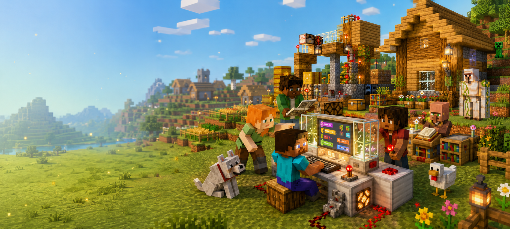
5-9 年級是孩子從「玩」走向「能力累積」的關鍵階段。
每位家長的處境不同，但常見的三個願望都很真實。
孩子玩麥塊已經幾百個小時。家長想知道：這份投入有沒有可能，變成真正的程式語言能力？
5-9 年級開始課業、才藝、學校活動全面增加。家長想要的是：能配合行程、不會因為缺課就跟不上的課。
家長都希望孩子保有對程式的好奇。最自然的方式，是在他已經投入這麼多時間的麥塊世界裡，認識真正的程式語言。
麥塊 Python 把孩子最害怕的「換新工具、學新語法」拆掉。
世界是熟的、角色是熟的、操作邏輯是熟的，
只是換成用 Python 對 Agent 下指令。
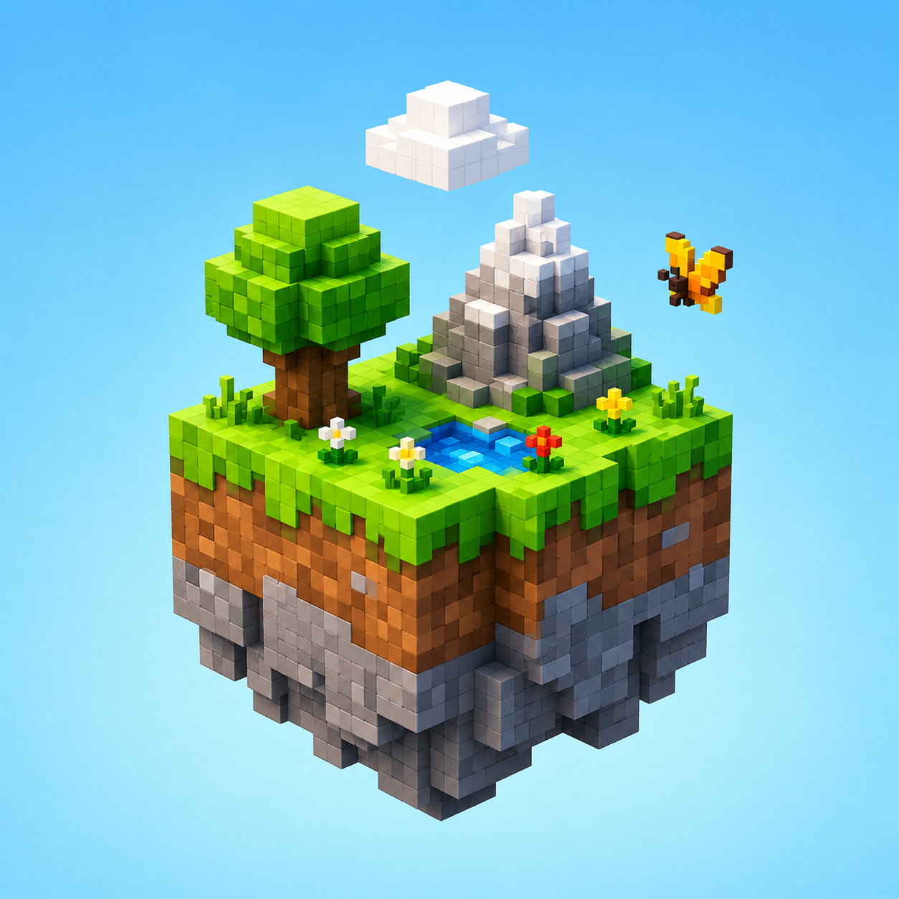
他熟悉的方塊、生物、地形、機制 — 全部都還在。降低 70% 啟動門檻。
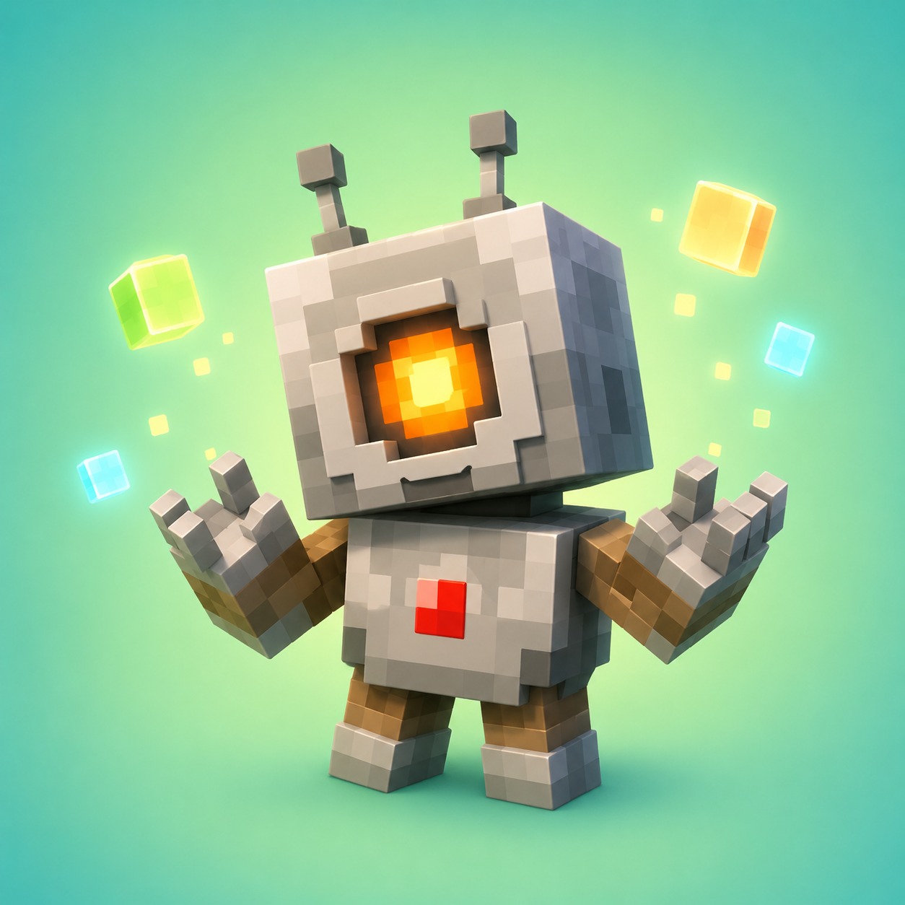
不是無聊地寫程式，是讓 Agent 幫他蓋房子、挖礦、做事 — 動機自然而強。
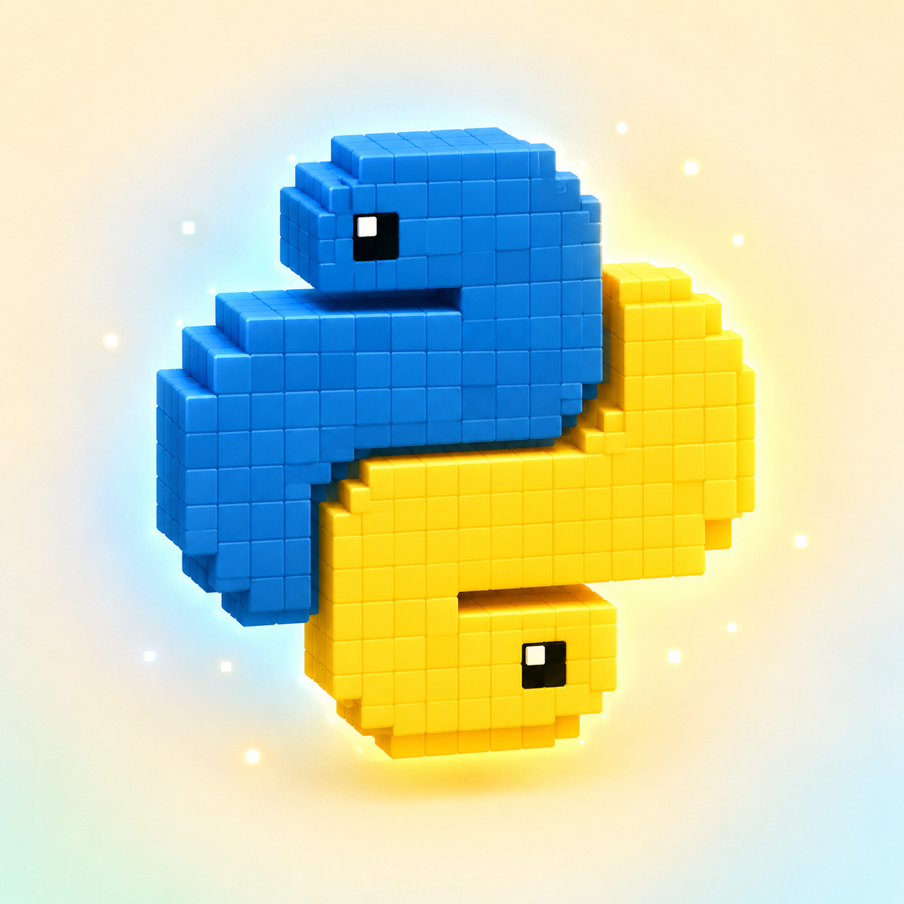
不是圖形拖拉、不是兒童玩具語言。從第一堂課就在寫真正的 Python — 寫完直接看到 Agent 動。
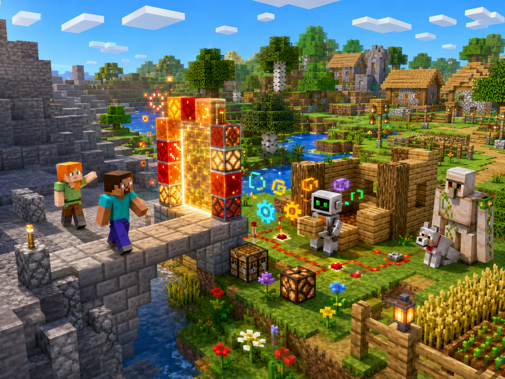
孩子實際在課堂上做的事 — 用 Python 對麥塊 Agent 下指令， 建立、修復、自動化整個 Minecraft 世界。
用迴圈和條件判斷，讓 Agent 邊挖邊撿、遇到熔岩自動轉向。一段 Python 程式碼搞定。
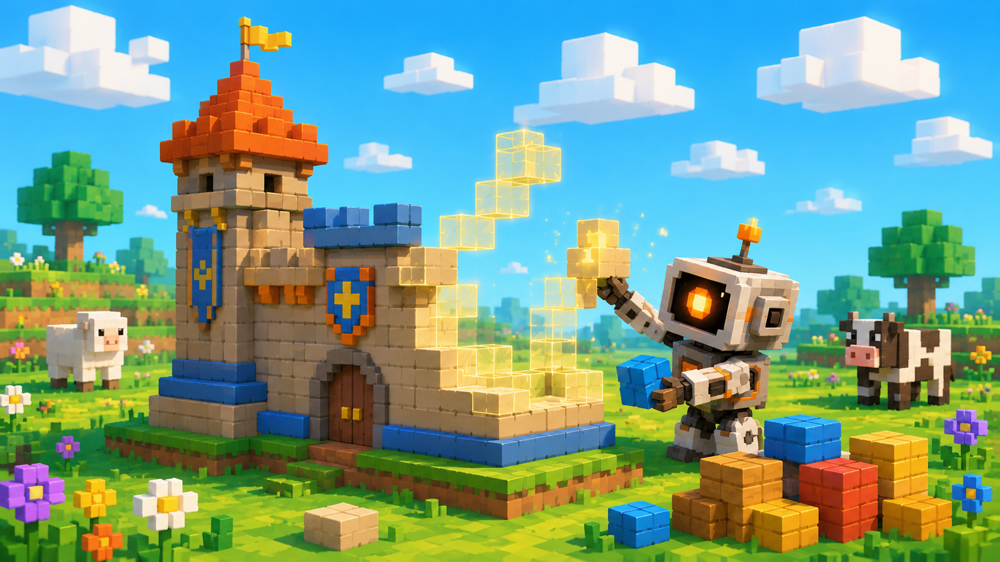
不再一塊一塊放方塊。用 Python 寫個函式，幾秒內就讓 Agent 把整座城堡蓋完。
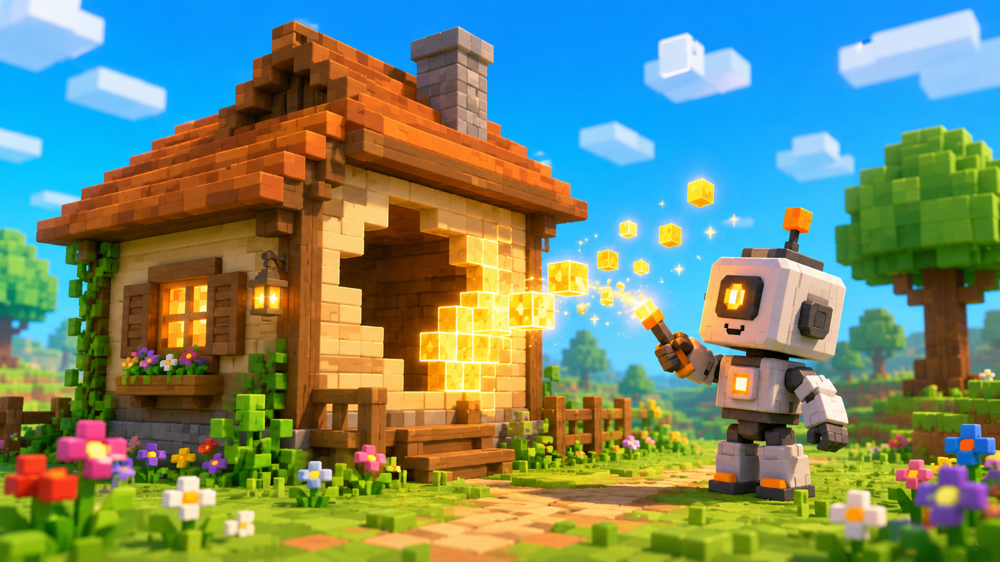
Creeper 把房子炸掉了？用 Python 寫一個「修復腳本」，Agent 自動補回所有被炸掉的方塊。
用 Python 控制座標、追蹤距離。寫完，麥塊裡就多了一隻只屬於孩子自己的寵物。
5-9 年級家長最焦慮的「課表衝突、孩子缺一堂跟不上、不能接送」
橘蘋的線上設計把這些痛點全部拆掉。
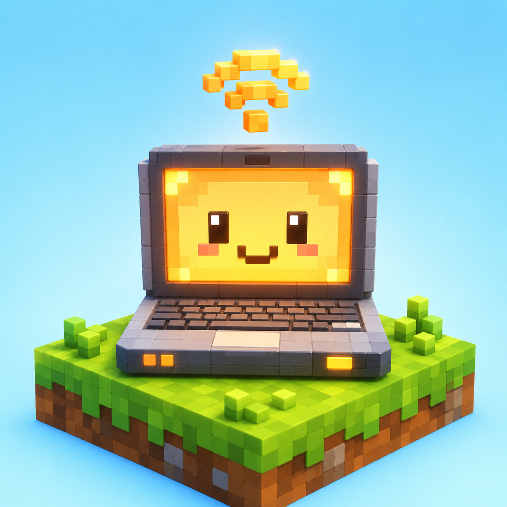
不用接送、不用出門。在家、在阿嬤家、在出差路上都能上。
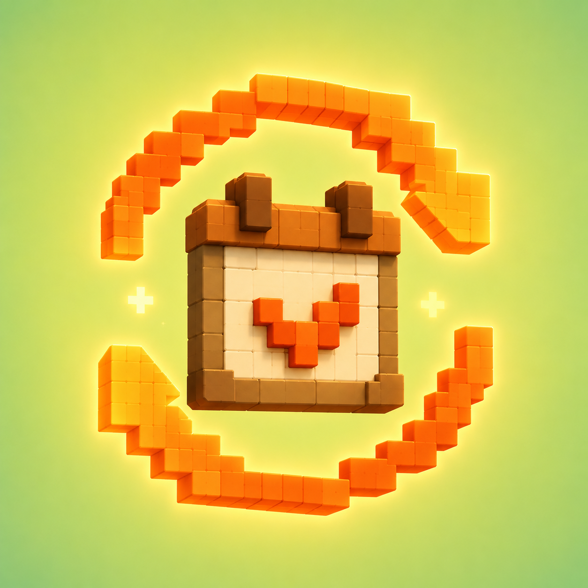
每一堂課都能彈性調整時段，沒有次數上限。只要在該期上課期限內完成所有課程即可（例：1 期 15 堂 / 15 週內上完）。
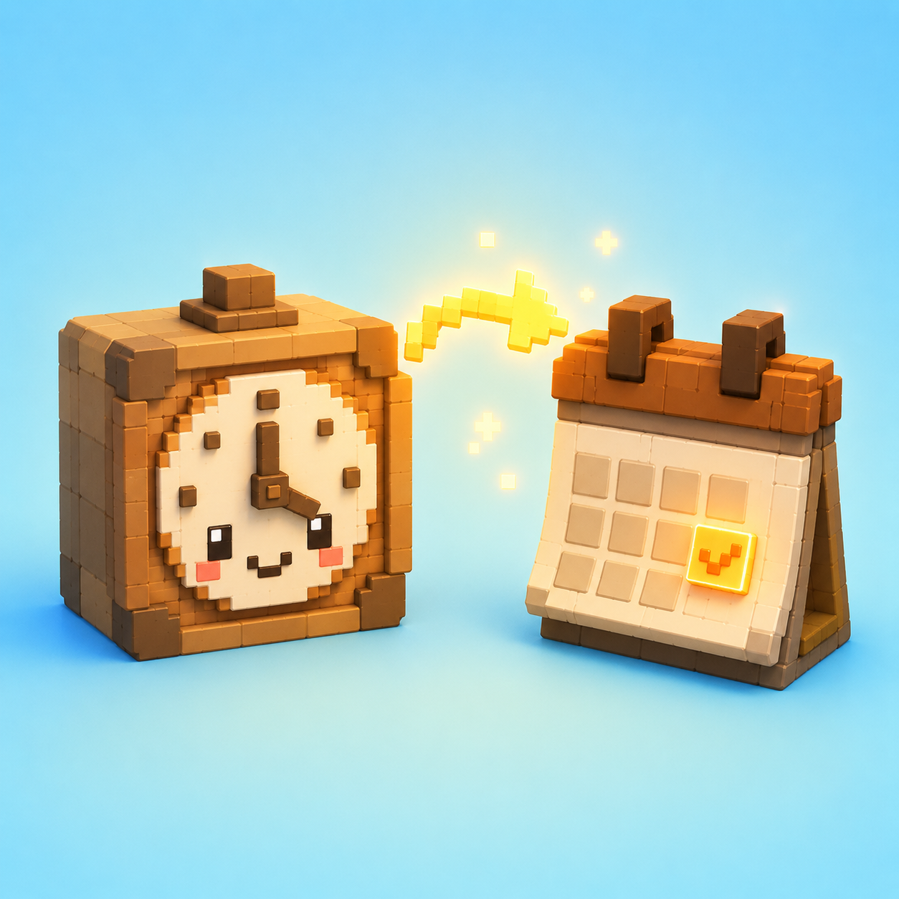
家長在橘蘋官網家長平台自助調課，最晚前一天 24:00 前完成。可調入未來 3 - 60 天內任何時段。
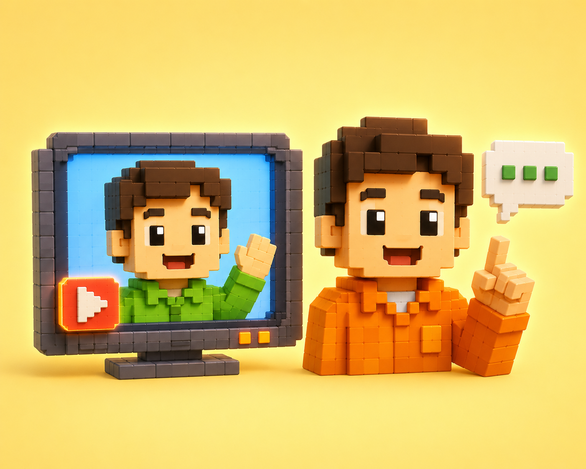
影片由資深講師預錄教學內容，搭配線上真人輔導老師互動帶領，孩子卡住會立刻被接住。
橘子蘋果的教學品質來自整套系統 —
從師資篩選、教材培訓，到每堂課的影片+真人雙師制，
確保每位孩子在線上也能獲得穩定、優質的學習體驗。
橘蘋教學部主導，每位老師都通過試教、教學評鑑與實際試帶後才能正式上線。
所有老師接受相同的麥塊 Python 教材培訓，確保每班節奏與品質一致。
影片中由資深講師預錄教學內容，確保講解清晰精準；同時搭配線上真人輔導老師互動帶領，孩子卡住時立刻被接住。
每期家長回饋、學員產出評估、教學部定期複訓 — 從入職到上課，全程在品質迴圈內。
以 1 週 1 堂的節奏，分 3 期循序漸進。
每期都有明確的階段成果，孩子和家長都看得到進步。
FIRST STEPS / 起步階段
AUTOMATION / 自動化階段
CREATION / 創作階段
不是每個孩子都上過橘蘋的麥塊基礎班，
所以我們設計了兩條報名方式，讓不同背景的孩子都能找到合適起點。
已經有橘蘋的麥塊操作基礎、熟悉教學節奏、知道指令邏輯。
直接報名加入，不需額外測驗。
只要 5 年級以上、有玩過麥塊就能評估。
透過體驗課時老師現場觀察「打字速度」和「麥塊操作熟悉度」，
確認能跟上節奏即可加入。
不是一張證書、不是一個分數。
是真實的程式經驗、屬於自己的作品、未來繼續學習的選擇權。
不是兒童玩具語言、不是拖拉積木。45 堂下來，孩子真的寫過幾百行 Python 程式，這是未來中學課程銜接的硬底子。
3 期累積屬於自己的麥塊作品 — 機器人、寵物、自動建築、修復系統。每件作品都由孩子親手加入創意與修改，讓麥塊世界長出獨一無二的樣子，可以驕傲地分享。
5-9 年級這個關鍵期，孩子沒有放棄程式、沒有對英文程式碼產生恐懼。這比任何分數都重要。
從「我要 Agent 蓋一面牆」到「我怎麼拆解這個任務」。45 堂下來，孩子開始用程式設計師的方式思考。
先用 45 堂玩中學打好寫程式的興趣與基礎。興趣養成後，孩子自然會想往下一階段挑戰；不想繼續？至少他不會抗拒程式。
每期都有作品產出。不是只看老師回報，孩子真的在麥塊裡跑出自己寫的程式。家長看了會放心。
留下諮詢資料，橘蘋專員會主動聯繫，安排免費體驗課。
試上一堂，再決定要不要報名。